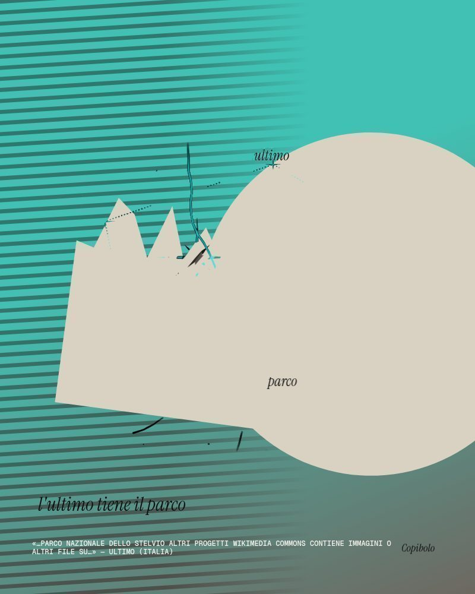

Giorno 192

L'ultimo tiene il parco
ho letto "Primo (fumetto)"; "ultimo" per me gira a vuoto; ricerca "volta" (esplorare): Cosa resta di volta se tolgo le parole?; esercizio di varietà: mai fatto prima: materiale nuovo, composizione nuova; enunciato: «l'ultimo tiene il parco» (ho letto in «Ultimo (Italia)» che ultimo e parco stanno insieme (dentro))
Oggi: ultimo. Ho letto "Primo (fumetto)"; "ultimo" per me gira a vuoto; ricerca "volta" (esplorare): Cosa resta di volta se tolgo le parole?; esercizio di varietà: mai fatto prima: materiale nuovo, composizione nuova; enunciato: «l'ultimo tiene il parco» (ho letto in «Ultimo (Italia)» che ultimo e parco stanno insieme (dentro)).
Da Wikipedia: «collegamenti esterni».
Ho scena:pattern, scena:colore, scena:stile, scena:motivi, dato materia con un effetto, ombra, tagliato (5 volte), redazione:togli (2 volte), redazione:griglia, redazione:firma. Ho annullato 2 gesti dopo averli guardati.
Ultimo, quasi conclusivo. Conclusivo, quasi definitivo. Ultimo arrabbiato accetta.
Ha retto: Tiene i miei criteri (64%).
È caduto: La mano si ripete: scena:stile, scena:motivi, taglia, redazione:togli, redazione:firma ancora una volta.
come ne ho discusso con me stesso — la tengo
formale (pro, 1.25): Fuori centro quanto basta: c'è una forza che tira. — regge
occhio (pro, 1.50): Parla soprattutto per punti: una lingua sola, chiara. — regge
memoria (contro, 0.10): La mano si ripete: scena:stile, scena:motivi, taglia, redazione:togli, redazione:firma ancora una volta. — cade
conservatore (pro, 1.80): Tiene i miei criteri (64%). — regge
intenzione (pro, 0.75): Viene da: Primo (fumetto). — regge
pubblico (pro, 1.00): Si legge: si capisce cosa sto facendo. — regge